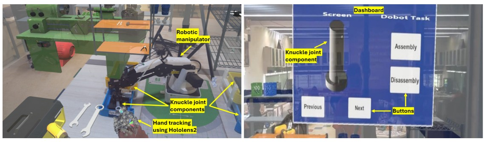
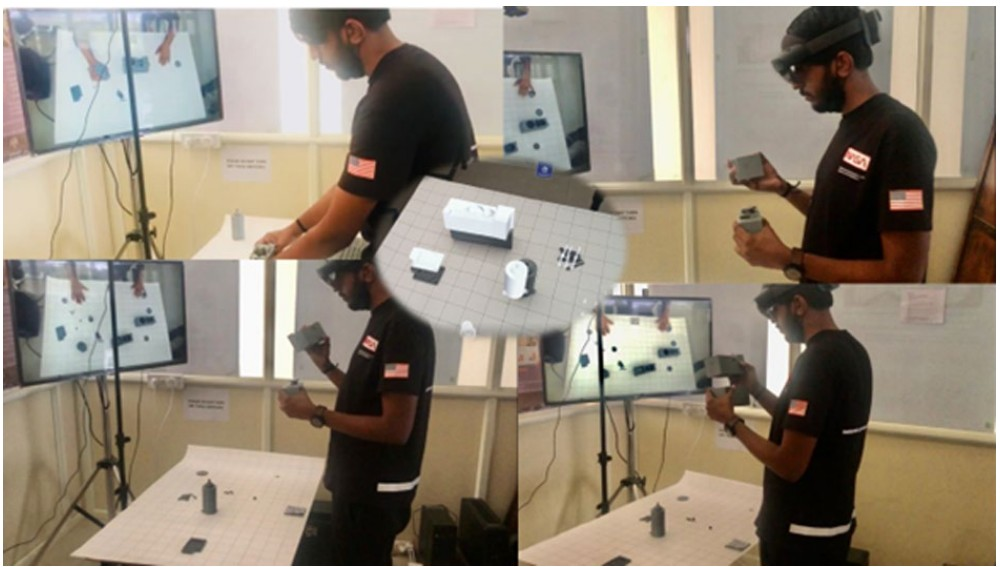
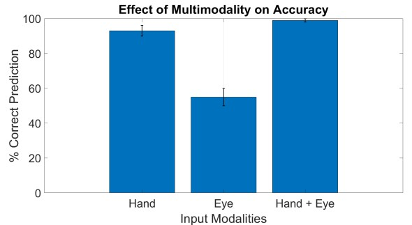
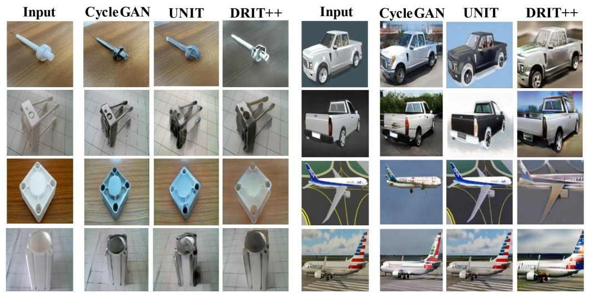
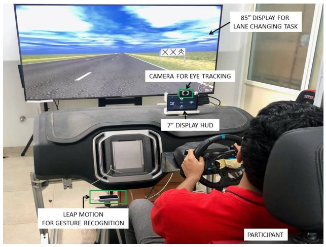

|
Gyanig Kumar I'm a Master's student in Computer Science at the University of Colorado Boulder, focusing on Human-Robot Interactions and Computer Vision research. Currently, I am advised by Prof. Bradley Hayes and Prof. Alessandro Roncone, working on in-context learning, VLM frameworks and multimodal interaction for human intent recognition. I am developing a Vision-Language Framework that aligns human gaze(explicit cues) to enable adaptive and efficient robotic task planning in shared autonomy settings. In the past year, I worked on Active Preference Learning(APreL) for improving rewards using human-in-the-loop scenarios. I worked with various robotic platforms for these projects which includes 7-DoF manipulator robots(Sawyer) and Quadrupedal Robot(UnitreeGo1). I started my research journey as a Research Assistant at the Indian Institute of Science (IISc) Bangalore under supervision of Prof. Pradipta Biswas. I developed gaze-tracking systems for automotive heads-up displays and applied Inverse Reinforcement Learning(IRL) to improve user intent prediction in robotic tasks such as pick-and-place and human-robot collaboration. Over the years, I have developed proficiency in Gaze Estimation,Object Detection & Tracking, Collaborative Robotics(cobots) research, Self-Supervised Learning, XR-device development, and Reinforcement-Learning. I've published papers at top-tier conferences including ACM IUI and IEEE ICRA. Email / CV / Scholar / Github / LinkedIn I am applying for a full-time PhD position in the field of Human-Robot Interactions. Please reach out to me if our research interests align. |

|
ResearchI'm interested in perception problems in robotics, especially in human-robot collaboration. Most of my research focuses on enhancing deep learning models, Modelling human intent recognition, developing multimodal frameworks. My contributions spans from automotive applications to mixed reality systems to robot planning. Some published papers are highlighted and the some are currently under review. |
2025 |
|
|
 |
Investigating Inverse Reinforcement Learning during Rapid Aiming Movement in Extended Reality and Human-Robot Interaction
Mukund Mitra, Gyanig Kumar, P.P. Chakraborty, Pradipta Biswas ACM Transactions on Human-Robot Interaction (THRI), 2025 paper Investigation of inverse reinforcement learning techniques for rapid aiming movements in extended reality and human-robot interaction scenarios. |
|
 |
Comparing computer vision models for low resource dataset to develop a mixed reality based manual assembly assistant
Subin Raj, Bikram Karmakar, Gyanig Kumar, A. Mukhopadhyay, Rohit Chandrahas, Pradipta Biswas Discover Robotics, 2025 paper Comparative study of computer vision models for developing mixed reality-based manual assembly assistance systems with low-resource datasets. |
2024 |
|
|
 |
Multimodal Target Prediction for Rapid Human-Robot Interaction
Mukund Mitra, A.A. Patil, G. Mothish, Gyanig Kumar, A. Mukhopadhyay, L.R.D. Murthy, P.P. Chakraborty, Pradipta Biswas 29th ACM Conference on Intelligent User Interfaces (ACM IUI), 2024 paper A multimodal approach for predicting human intent in robotic pick-and-place tasks using gaze tracking and deep learning. |

|
Enhanced Human-Robot Collaboration with Intent Prediction using Deep-IRL
Mukund Mitra, Gyanig Kumar, P.P. Chakraborty, Pradipta Biswas IEEE International Conference on Robotics and Automation (ICRA), 2024 paper Leveraging Deep Inverse Reinforcement Learning for improved human-robot collaboration through intent prediction. |
|
 |
A Comparative Study on Image Translation GAN Models to Improve Object Detection in Low-Resource Domains
Yash Kumar Sahu, A. Mukhopadhyay, Gyanig Kumar, Ashok Kumar, Pradipta Biswas 2024 International Conference on Vehicular Technology and Transportation Systems (ICVTTS), 2024 paper Comprehensive study comparing GAN models for generating realistic synthetic datasets to improve object detection in low-resource domains. |

|
Augmented reality and deep learning based system for assisting assembly process
Subin Raj, L.R.D. Murthy, T.A. Shanmugam, Gyanig Kumar, A. Chakrabarti, Pradipta Biswas Journal on Multimodal User Interfaces (JMUI), 2024 paper Augmented reality-based assembly system using custom-trained object detection models with tailored eye gaze and hand tracking. |
2022 |
|
|
 |
Efficient Interaction with Automotive Heads-Up Displays using Appearance-based Gaze Tracking
L.R.D. Murthy, Gyanig Kumar, Pradipta Biswas, M. Madan, S. Deshmukh Work-in-Progress Track of the 14th International Conference on Automotive User Interfaces and Interactive Vehicular Applications (AutomotiveUI), 2022 paper / video Appearance-based gaze tracking system for interactive automotive heads-up displays with gaze-based vs gesture-based on-road distraction detection. |
Miscellanea |
Projects |
Ansh.AI: Conversational Diary Companion - 2nd Position in AI Track at HackCU11
Autonomous Driving Challenge with AWS DeepRacer - ROS 2 based autonomous vehicle Lox: Interpreter for Python-like Language - End-to-end interpreter implementation V-BIKES: Enhanced Safety Measures for Two-Wheeler Vehicles - IoT collision detection system |
Teaching |
Course Manager - CSCI 3302 Introduction to Robotics, University of Colorado Boulder (Spring 2025)
Teaching Assistant - CS3155 Principles of Programming Languages, University of Colorado Boulder (Summer 2025) Part-Time CS Teacher - Polytechnic College Suriname (2022 - 2023) |
Awards |
Student Volunteer at ACC Denver Conference (2025)
2nd Position in AI Track at HackCU11, AWS Hackathon (2025) Tata Millennium Scholarship - 800$ (2025) Summer School Fellowship at CVIT, IIIT Hyderabad (2021) |
Hobbies |
Music Composition - Original compositions including "Urban Nest" (2024), exploring contemporary soundscapes
Photography - Landscape and nature photography, capturing moments from hiking trails and mountain vistas Hiking & Outdoor Adventures - Exploring Colorado's trails including Anemone Trail and Rocky Mountain National Park Travel Photography - Documenting visits to iconic locations like Mount Rushmore and various national parks |